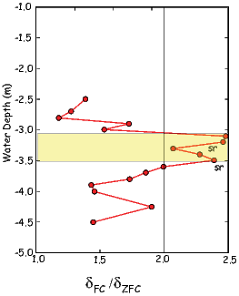
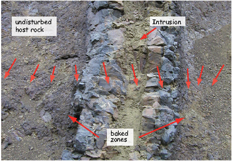
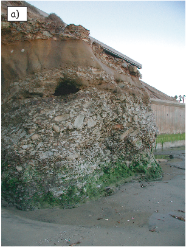
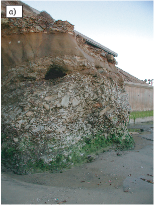

Rocks become magnetized in a variety of ways (see Chapter 7). Both igneous and
sedimentary rocks can be affected by chemical change, thereby acquiring a
secondary magnetization. Many magnetic materials are affected by viscous
remanent magnetization. The various components of magnetization sum together
to constitute the NRM which is the “raw” remanence of the sample after
extraction. The goal of paleomagnetic laboratory work is to isolate the various
components of remanence and to ascribe origin, age and reliability to these
components. But before the laboratory work can begin, samples must be
collected. Sampling strategy is crucial to a successful study. In this chapter, we
will briefly describe techniques for sampling, methods of orientation and overall
philosophy. We will then turn to an overview of some of the more useful field and
laboratory techniques that wind up with an estimate of a paleomagnetic
direction.
There are several goals in paleomagnetic sampling: one is to average out the
errors involved in the sampling process itself, and to assess the reliability of the
recording medium (recording noise). In addition, we often wish to sample the
range of secular variation of the geomagnetic field in order to average it
out or characterize its statistical properties. The objectives of averaging
recording and sampling “noise” are achieved by taking a number N of
individually oriented samples from a single unit (called a site). Samples
should be taken such that they represent a single time horizon, that is,
they are from a single cooling unit or the same sedimentary horizon.
The most careful sample orientation procedure has an uncertainty of
several degrees. Precision is gained proportional to , so to improve the
precision, multiple individually oriented samples are required. The number of
samples taken should be tailored to the particular project at hand. If
one wishes to know polarity, perhaps three samples would be sufficient
(these would be taken primarily to assess recording noise). If, on the
other hand, one wished to make inferences about secular variation of the
geomagnetic field, more samples would be necessary to suppress sampling
noise.
Some applications in paleomagnetism require that the secular variation of the
geomagnetic field (the paleomagnetic “noise”) be averaged in order to determine
the time-averaged field direction. The geomagnetic field varies with time
constants ranging from milliseconds to millions of years. It is a reasonable first
order approximation to assume that, when averaged over, say, 104 or 105 years,
the geomagnetic field is similar to that of a geocentric axial dipole (equivalent to
the field that would be produced by a bar magnet at the center of the Earth,
aligned with the spin axis; see Chapter 2). Thus, when a time-averaged field
direction is required, enough sites must be sampled to span sufficient time to
achieve this goal. A general rule of thumb would be to aim for about
ten sites (each with nine to ten samples), spanning 100,000 years. If the
distribution of geomagnetic field vectors is desired, then more like 100 sites are
necessary.
Samples can be taken using a gasoline or electric powered drill, as “hand
samples” (also known as “block samples” or as “sub-samples”) from a piston
core.
- Samples cored with portable drill. The most common type of
paleomagnetic sample is collected by using a gasoline-powered portable
drilling apparatus with a water-cooled diamond bit (Figure 9.1a). The
diameter of cores is usually ~2.5 cm. After drilling into the outcrop to
a depth of 6 to 12 cm, an orientation device is slipped over the sample
while it is still attached to the outcrop at its base (Figure 9.1b and
Figure 9.4). Orientation devices have an inclinometer for determining
dip (angle from the horizontal down or up) or the hade (angle
from the vertical down direction) of the core axis. They also have
a magnetic and/or sun compass for determining azimuth of core
axis. The accuracy of orientation by such methods is about ±3∘.
A fiducial mark is scratched on to the core with a brass wire
(Figure 9.1b), or if the core has broken free, a mark is made on the
outcrop and transferred to the core (with a degradation of accuracy
in orientation). After orientation, the core is broken from the outcrop
(Figure 9.1c), marked for orientation and identification (Figure 9.1d),
and returned to the laboratory. Advantages of the coring technique
are the ability to obtain samples from a wide variety of natural or
artificial exposures and accurate orientation. Disadvantages include
the necessity of transporting heavy fluids (water and gasoline) to the
sampling site, dependence on performance of the drilling apparatus
(often in remote locations), and herniated disks, damaged shoulders
and hearing loss suffered by inveterate drillers.
- Block samples. In some locations or with particular lithologies that
are not easily drilled, logistics (or laws) might demand collection of
oriented block samples. Some samples can be shaved with a hand
rasp to create a flat surface which can be oriented (e.g., Figure 9.2).
Joint blocks are often oriented (generally by determining the strike and
dip of a surface) and then removed from the outcrop. For unlithified
sediments, samples may be carved from the outcrop (see also Schnepp
et al., 2008). Advantages of block sampling are freedom from reliance
on coring apparatus and the ability to collect lithologies that are
unsuitable for coring. There are, however, conspicuous disadvantages:
limited accuracy of orientation, the need to collect joint blocks (likely
more weathered than massive portions of outcrops), and the need to
transport large numbers of cumbersome block samples out of the field
and later subsample or sand these to obtain specimens.
- Lake-bottom or sea-bottom core samples. Numerous devices have been
developed to obtain columns of sediment from lake or sea bottom.
Diameters of these coring devices are typically ~10 cm and they may be of
circular or square cross section. Most such cores are azimuthally unoriented
and are assumed to penetrate the sediment vertically. Depth of penetration
for ordinary piston cores is usually < 20 m. Deep sea coring by the Deep
Sea Drilling Program and its successors, the Ocean Drilling Program and
the Integrated Ocean Drilling Program allow collection of 100s of
meters of overlapping cores with virtually 100% recovery. Samples for
laboratory measurement are subsampled from the sediment core
(Figure 9.3.)
The diversity of paleomagnetic investigations and applications makes it hard to
generalize about sample collection, but there are some time-honored
recommendations. One obvious recommendation is to collect fresh, unweathered
samples. Surface weathering oxidizes magnetite to hematite or iron-oxyhydroxides,
with attendant deterioration of NRM carried by magnetite and possible
formation of modern CRM. Artificial outcrops (such as road cuts) thus are
preferred locations, and rapidly incising gorges provide the best natural
exposures.
Lightning strikes can produce significant secondary IRM, which can mask the
primary remanence. Although partial demagnetization in the laboratory can
often erase lightning-induced IRM, the best policy is to avoid lightning-prone
areas. When possible, avoid topographic highs, especially in tropical regions. If
samples must be collected in lightning-prone areas, effects of lightning can be
minimized by surveying the outcrop prior to sample collection to find areas that
have probably been struck by lightning. This is done by “mapping” the areas
where significant (> 5∘) deflections of the magnetic compass occur. If a magnetic
compass is passed over an outcrop at a distance of ~15 cm from the
rock face while the compass is held in fixed azimuth, the strong and
inhomogeneous IRM produced by a lightning strike will cause detectable
deflections of the compass. These regions then can be avoided during sample
collection.
In general, some direction (drill direction, strike and dip, direction of a horizontal
line or even just the “up” direction) is measured on the sample. This
direction is here called the field arrow. When samples are prepared into
specimens for measurement, the field arrow is often replaced by a lab arrow
which is frequently in some other direction. Procedures for orienting the
field arrow are varied, and no standard convention exists. However, all
orientation schemes are designed to provide an unambiguous in situ geographic
orientation of each sample. A variety of tools are used including orientation
devices with magnetic and sun compasses, levels for measuring angles
from the horizontal and even differential GPS devices for establishing
the azimuth of a local baseline without the need for magnetic or sun
compasses.
If a magnetic compass is used to orient samples in the field, the preferred practice
is to set the compass declination to zero. Then, in post-processing, the measured
azimuth must be adjusted by the local magnetic declination, which can be
calculated from a known reference field (IGRF or DGRF; see Chapter 2).
The hade (angle from vertical down) or plunge (angle down [positive] or
up [negative] from horizontal) of the sample can also be gotten using
an inclinometer (either with a Pomeroy orientation device as shown in
Figure 9.1 or with some other inclinometer, such as that on a Brunton
Compass.)
Sometimes large local magnetic anomalies, for example from a strongly
magnetized rock unit, can lead to a bias in the magnetic direction that is not
compensated for by the IGRF magnetic declination. In such cases, some other
means of sample orientation is required. One relatively straightforward way is to
use a sun compass. Calculation of a direction using a sun compass is more
involved than for magnetic compass, however. A dial with a vertical needle (a
gnomon) is placed on the horizontal platform shown in Figure 9.5. The angle (α)
that the sun’s shadow makes with the drilling direction is noted as well as the
exact time of sampling and the location of the sampling site. With this
information and the aid of the Astronomical Almanac or a simple algorithm (see
Appendix A.3.8), it is possible to calculate the desired direction to reasonable
accuracy (the biggest cause of uncertainty is actually reading the shadow
angle!).
Another way to avoid the deflection of the compass needle by strong local
magnetic anomalies is to check the direction by sighting to known landmarks or
by moving a second magnetic compass well away from the outcrop and
back-sighting along the drill direction. This is easiest by using the sun-compass
gnomon and sighting tip of the original compass as guides (see Figure 9.6). The
original magnetic compass direction (near the outcrop) can be compared to the
backsighted direction in order to detect and remove any deflection. Of course the
compass reading made with the orientation device (near outcrop) is more
precise (~ 3∘), but backsighting can be done with a precision of ~ 5∘ with
care.
A new technique, developed by C. Constable and F. Vernon at Scripps
Institution of Oceanography (see Lawrence et al. 2009) uses differential Global
Positioning System (GPS) technology (see Figure 9.7) to determine the
azimuth of a baseline. Two GPS receivers are attached to either end of
a one meter long non-magnetic rigid base. The location and azimuth
of the baseline can be computed from the signals detected by the two
receivers. The orientation of the baseline is transferred to the paleomagnetic
samples using a laser mounted on the base which is focused on a prism
attached to the orientation device used to orient the paleomagnetic samples.
The orientations derived by the differential GPS are nearly identical to
those obtained by a sun compass, although it takes at least an additional
half hour and is rather awkward to transport. Nonetheless, achieving
sun-compass accuracy in orientations when the sun is unlikely to be readily
available is a major breakthrough for high latitude paleomagnetic field
procedures.
Samples are brought to the laboratory and trimmed into standard sizes and
shapes (see Figure 9.8). These sub-samples are called paleomagnetic specimens.
A rule of thumb about terminology is that a sample is something you take
and a specimen is something you measure. The two may be the same
object, or there may be multiple specimens per sample. A site is a single
horizon or instant in time and may comprise multiple samples or may be
only a single sample, depending on the application. Multiple specimens
from a single site are expected to have recorded the same geomagnetic
field.
We measure the magnetic remanence of paleomagnetic specimens in a rock
magnetometer, of which there are various types. The cheapest are spinner
magnetometers so named because they spin the specimen to create a fluctuating
electromotive force (emf). The emf is proportional to the magnetization and can
be determined relative to the three axes defined by the sample coordinate
system. The magnetization along a given axis is measured by detecting the
voltages induced by the spinning magnetic moment within a set of pick-up
coils.
Another popular way to measure the magnetization of a specimen is to use a
cryogenic magnetometer. These magnetometers operate using so-called
superconducting quantum interference devices (SQUIDs). In a SQUID,
the flux of an inserted specimen is opposed by a current in a loop of
superconducting wire. The superconducting loop is constructed with a
weak link which stops superconducting at some very low current density,
corresponding to some very small quantum of flux. Thus the flux within the loop
can change by discrete quanta. Each incremental change is counted and
the total flux is proportional to the magnetization along the axis of the
SQUID. Cryogenic magnetometers are much faster and more sensitive
than spinner magnetometers, but they cost much more to buy and to
operate.
Magnetometers are used to measure the three components of the magnetization
necessary to define a vector (e.g., x1,x2,x3 or equivalently x,y,z). These data
can be converted to the more common form of D, I and M by methods described
in Chapter 2.
Data often must be transformed from the specimen coordinate system into, for
example, geographic coordinates. This can be done graphically with a
stereonet or by means of matrix manipulation. We outline the general case
for transformation of coordinates in Appendix A.3.5. Here we examine
the specific cases of the transformation from specimen coordinates to
geographic coordinates and the transformation of geographic coordinates to
tilt corrected coordinates, the two most commonly used rotations in
paleomagnetism.
No matter how the sample was taken, data in the laboratory are measured with
respect to the specimen coordinate system, so all the field arrows, no
matter how obtained, must be converted into the direction of the lab
arrow (x; see example in Figure 9.4 and Figure 9.8a for field drilled
samples.) Suppose we measured a magnetic moment m (Figure 9.9a). The
components of m in specimen coordinates are x,y,z or equivalently, x1,x2,x3.
Ordinarily, this coordinate system is at some arbitrary angle to the geographic
coordinate system, but we know the azimuth and plunge (Az,Pl) of the lab
arrow with respect to the geographic coordinate system (Figure 9.9b). By
substituting Az and Pl for ϕ and λ into Equation A.13, the components of
the direction of m in geographic coordinates can be calculated. These
then can be converted back into D,I and m using the equations given in
Chapter 2. Note that m stays the same during the transformation of
coordinates.
To correct for tilt, it is simplest to understand if this is performed as three
rotations. This is how it is done graphically with a stereonet and it is possible to
do it the same way with a computer. [It can also be done as a single rotation,
which would be computationally faster, but much harder to visualize.] First,
rotate the direction of magnetic moment in specimen coordinates about a vertical
axis by subtracting the dip direction from the declination of the measurement.
Then substitute ϕ = 0 and λ = - dip into Equation A.13 to bring the
dip back up to horizontal. Finally, rotate the direction back around the
vertical axis by adding the dip direction back on to the resulting rotated
declination.
Anyone who has dealt with magnets (including magnetic tape, credit cards, and
magnets) knows that they are delicate and likely to demagnetize or change their
magnetic properties if abused by heat, large magnetic fields or stress. Cassette
tapes left on the dashboard of the car in the hot sun never sound the same.
Credit cards that have been through the dryer may lead to acute embarrassment
at the check-out counter. Magnets that have been dropped, do not work as well
afterwards. It is not difficult to imagine that rocks that have been left
in the hot sun or buried deep in the crust (not to mention altered by
diagenesis or bashed with hammers, drills, pick axes, etc.), may not have their
original magnetic vectors completely intact. Because rocks often contain
millions of tiny magnets, it is possible that some (or all) of these have
become realigned, or that they grew since the rock formed. In many cases,
there are still grains that carry the original remanent vector, but there
are often populations of grains that have acquired new components of
magnetization. The good news is that viscous magnetizations are carried by
grains with lower magnetic anisotropy energies (they are “softer”, magnetically
speaking), so we expect their contribution to be more easily randomized
than the more stable (“harder”) grains carrying the ancient remanent
magnetization.
There are several laboratory techniques that are available for separating various
components of magnetization. Paleomagnetists rely on the relationship of
relaxation time, coercivity, and temperature in order to remove (demagnetize)
low stability remanence components. The fundamental principle that underlies
demagnetization techniques is that the lower the relaxation time τ, the more
likely the grain will carry a secondary magnetization. The basis for alternating
field (AF) demagnetization is that components with short relaxation times also
have low coercivities. The basis for thermal demagnetization is that these grains
also have low blocking temperatures.
In AF demagnetization, an oscillating field is applied to a paleomagnetic
specimen in a null magnetic field environment (Figure 7.22 in Chapter 7). All the
grain moments with coercivities below the peak AF will track the field. These
entrained moments will become stuck as the peak field gradually decays below
the coercivities of individual grains. Assuming that there is a range of coercivities
in the specimen, the low stability grains will be stuck half along one direction of
the AF and half along the other direction; the net contribution to the remanence
will be zero. In practice, we demagnetize specimens sequentially along three
orthogonal axes, or while “tumbling” the specimen around three axes during
demagnetization.
Thermal demagnetization exploits the relationship of relaxation time and
temperature. There will be a temperature below the Curie temperature at
which the relaxation time is a few hundred seconds. When heated to this
temperature, grains with relaxation times this short will be in equilibrium
with the field. This is the unblocking temperature. If the external field is
zero, then there will be no net magnetization. Lowering the temperature
back to room temperature will result in the relaxation times growing
exponentially until these moments are once again fixed. In this way, the
contribution of lower stability grains to the NRM can be randomized.
Alternatively, if there is a DC field applied during cooling, the grains whose
unblocking temperatures have been exceeded will be realigned in the new field
direction; they will have acquired a partial thermal remanent magnetization
(pTRM).
We sketch the principles of progressive (step-wise) demagnetization in
Figure 9.10. Initially, the NRM is the sum of two components carried by
populations with different coercivities. The distributions of coercivities are shown
in the histograms to the left in Figure 9.10. Two components of magnetization
are shown as heavy lines in the plots to the right. In these examples,
the two components are orthogonal. The sum of the two components at
the start (the NRM or demagnetization step ‘0’) is shown as a + on
the vector plots to the right. After the first AF demagnetization step,
the contribution of the lowest coercivity grains has been erased and the
remanence vector moves to the position of the first dot away from the +.
Increasing the AF in successive treatment steps (some are numbered in the
diagram) gradually eats away at the remanence vectors (shown as dashed
arrows and dots in the plots to the right) which eventually approach the
origin.
There are four different sets of coercivity spectra shown in Figure 9.10, each with
a distinctive behavior during demagnetization. If the two coercivity fractions are
completely distinct, the two components are clearly defined (Figure 9.10a) by the
progressive demagnetization. If there is some overlap in the coercivity
distribution of the components the resulting demagnetization diagram is curved
(Figure 9.10b). If the two components completely overlap, both components are
removed simultaneously and an apparently single component demagnetization
diagram may result (Figure 9.10c). It is also possible for one coercivity
spectrum to include another as shown in Figure 9.10d. Such cases result in
“S” shaped demagnetization curves. Because complete overlap actually
happens in “real” rocks, it is desirable to perform both AF and thermal
demagnetization. If the two components overlap completely in coercivity, they
might not have overlapping blocking temperature distributions and vice
versa. It is unlikely that specimens from the same lithology will all have
identical overlapping distributions, so multiple specimens can provide
clues to the possibility of completely overlapped directions in a given
specimen.
Now we will consider briefly the issue of what to do with the demagnetization
data in terms of display and estimating a best-fit direction for various
components.
The standard practice in demagnetization is to measure the NRM and then to
subject the specimen to a series of demagnetization steps of increasing severity.
The magnetization of the specimen is measured after each step. During
demagnetization, the remanent magnetization vector will change until the most
stable component has been isolated, at which point the vector decays in a
straight line to the origin. This final component is called the characteristic
remanent magnetization or ChRM.
Visualizing demagnetization data is a three-dimensional problem and therefore
difficult to plot on paper. Paleomagnetists often rely on a set of two projections
of the vectors, one on the horizontal plane and one on the vertical plane. These
are variously called Zijderveld diagrams (Zijderveld, 1967), orthogonal
projections, or vector end-point diagrams.
In orthogonal projections, the x1 component is plotted versus x2 (solid symbols)
in one projection, and x1 is replotted versus Down (x3) (open symbols) in
another projection. The paleomagnetic convention differs from the usual x-y
plotting convention because x3 is on a vertical axis which is positive in the
downward direction (instead of the usual positive up convention). The choice of
axis for the horizontal projection is a little more tricky. x2 is always positive to
the right of x1. x1 is frequently plotted along the horizontal axis and x2 would
then be on the vertical axis, again positive in the downward direction. The
paleomagnetic conventions make sense if one visualizes the diagram as a
map view for the solid symbols and a vertical projection for the open
symbols.
Because x3 gets plotted against whatever is chosen for the horizontal axis, the
angle that the vertical projection makes will only be true inclination if the
horizontal axis happens to be parallel to the remanence vector, i.e. directly along
x1. For this reason, x2 is sometimes plotted along the horizontal axis if the
remanence vector is more parallel to x2. Some people choose to plot the pairs of
points (x1,x2) versus (H,x3) where H is the horizontal projection of
the vector given by  . In this projection, sometimes called a
component plot, the coordinate system changes with every demagnetization
step because H almost always changes direction, even if only slightly.
Plotting H versus x3 is therefore a confusing and misleading practice. The
primary rationale for doing so is because, in the traditional orthogonal
projection where x3 is plotted against x1 or x2, the vertical component
reveals only an apparent inclination. In fact, the choice of horizontal
component is arbitrary and could be deliberately chosen to be parallel to the
remanence directions. If something close to true inclination is desired, then,
instead of plotting H and x3, one can simply rotate the horizontal axes of
the orthogonal plot such that it closely parallels the desired declination
(Figure 9.11a,b).
. In this projection, sometimes called a
component plot, the coordinate system changes with every demagnetization
step because H almost always changes direction, even if only slightly.
Plotting H versus x3 is therefore a confusing and misleading practice. The
primary rationale for doing so is because, in the traditional orthogonal
projection where x3 is plotted against x1 or x2, the vertical component
reveals only an apparent inclination. In fact, the choice of horizontal
component is arbitrary and could be deliberately chosen to be parallel to the
remanence directions. If something close to true inclination is desired, then,
instead of plotting H and x3, one can simply rotate the horizontal axes of
the orthogonal plot such that it closely parallels the desired declination
(Figure 9.11a,b).
In the plots shown in Figure 9.11a,c we have rotated the remanence vector
such that the x1 component is parallel to the original NRM direction. In
Figure 9.11, we show several general types of demagnetization behavior. In
Figure 9.11a, the specimen has a North-Northwest and downward directed
NRM (see inset of equal area projection in geographic coordinates.) The
direction does not change during demagnetization and the NRM is a single
vector. The median destructive field (from Chapter 8) is illustrated in
Figure 9.11b. The specimen in Figure 9.11c shows a progressive change in
direction from a Westward and up directed component to a North and
down direction. The vector continuously changes direction to the end and
no final “clean” direction has been confidently isolated. These data are
plotted on an equal area projection in the inset along with the trace of the
best-fitting plane (a great circle). The most stable component probably lies
somewhere near the best-fitting plane. This specimen came from the outcrop
depicted in Figure 7.19 in Chapter 7 which had been hit by lightning.
The presumptive IRM is much “softer” on demagnetization; the NRM is
virtually erased by 40 mT, whereas the mdf of the specimen that had
not been hit by lightning is much higher (Figure 9.11a,b). The NRM
of the lightning hit specimen is also more than an order of magnitude
stronger.
The behavior of the specimen shown in Figure 9.11d is again markedly different
in that the intensity, after an initial smooth decrease, begins to climb again at
high demagnetizing fields. The direction deflects away from the origin towards a
direction that is orthogonal to the last axis to be demagnetized. This
behavior is typical of GRM acquisition during demagnetization (see Chapter
7).
When specimens acquire a remanence either along the axis of the oscillating field
(an ARM) or orthogonal to it (a GRM as in Figure 9.11d) they require a more
complicated demagnetization regime than just along the three axes. In the
case of the parallel acquisition, a double demagnetization protocol works
well. In double demagnetization (e.g., Tauxe et al., 2004), a specimen is
subjected to demagnetization along the three orthogonal axes, say along
+X1,+X2,+X3, and is measured, then demagnetized along -X1,-X2,-X3
and remeasured. The two measurements are averaged to give an ARM
free vector. In the case of GRM, Stephenson (1993) developed a triple
demagnetization protocol whereby specimens are demagnetized along
+X1,+X2,+X3 measured, then demagnetized along +X2, measured
and finally along +X1 and measured. These three steps are averaged
to give a GRM-free vector. This method is a simplified but at times
sufficient variation of the six step procedure described by Dankers and
Zijderveld (1981). GRMs have been associated with specimens that have a
high anisotropy (e.g., Stephenson, 1993; Tauxe et al., 2004; Potter and
Stephenson, 2005), or have a greigite magnetic remanence (e.g., Snowball,
1997).
An equal area projection may be the most useful way to present demagnetization
data from a specimen with several strongly overlapping remanence components
(such as in Figures 9.11c-d). In order to represent the vector nature of
paleomagnetic data, it is necessary to plot intensity information. Intensity can be
plotted versus demagnetization step in an intensity decay curve (Figure 9.11b).
However, if there are several components with different directions, the intensity
decay curve cannot be used to determine, say, the blocking temperature
spectrum or mdf, because it is the vector sum of the two components.
It is therefore advantageous to consider the decay curve of the vector
difference sum (VDS) of Gee et al. (1993). The VDS “straightens out”
the various components by summing up the vector differences at each
demagnetization step, so the total magnetization is plotted, as opposed to the
resultant.
Orthogonal vector projections aid in identification of the various remanence
components in a specimen. Demagnetization data are usually treated using what
is known as principal component analysis (Kirschvink, 1980). This is done by
calculating the orientation tensor for the set of data and finding its eigenvectors
(Vi) and eigenvalues (τi); see Appendix A.3.5 for computational details. What
comes out of the analysis is a best-fit line through a single component of data as
in Figure 9.11a,b or a best-fit plane (or great circle, if each point is given unit
weight) through multi-component data as in Figure 9.11c,d. Kirschvink
[1980] also defined the maximum angle of deviation or (MAD) for each of
these.
The best-fit line is given by the principal eigenvector V 1 and its MAD is given
by:
 | (9.1) |
If no unique principal direction can be isolated (as for the specimen in
Figure 9.11c-d), the eigenvector V3 associated with the least eigenvalue τ3 can
be taken as the pole to the best-fit plane wherein the component of interest must
lie. The MAD angle for the best-fit plane is given by:
The angle between the best-fitting line through the data and the origin is termed
the Deviation ANGle or DANG. The line connecting the data to the origin is
taken as the vector from the origin to the center of mass of the data
(Equation A.15).
In addition to establishing that a given rock unit retains a consistent
magnetization, it is also important to establish when this magnetization was
acquired. Arguments concerning the age of magnetic remanence can be built on
indirect petrographic evidence as to the relative ages of various magnetic
minerals, or by evidence based on geometric relationships in the field. There are
two popular field tests that require special sampling strategies: the fold test and
the conglomerate test.
The fold test (also known as a tilt test) relies on the tilting or folding of the target
geological material. If, for example, one wanted to establish the antiquity of a
particular set of directions, one could deliberately sample units of like
lithology, with different present attitudes (Figure 9.12). If the recovered
directions are more tightly grouped before adjusting for tilt (as in the lower
left panel), then the magnetization is likely to have been acquired after
tilting. On the other hand, if directions become better grouped in the tilt
adjusted coordinates (see upper right panel), one has an argument in
favor of a pre-tilt age of the magnetization. Methods for quantifying the
tightness of grouping in various coordinate systems will be discussed in later
chapters.
In the conglomerate test, lithologies that are desirable for paleomagnetic purposes
must be found in a conglomerate bed (Figure 9.13a). In this rare and happy
circumstance, we can sample them and show that: 1) the rock magnetic behavior
is the same for the conglomerate samples as for those being used in the
paleomagnetic study, 2) the directions of the studied lithology are well grouped,
(Figure 9.13b) and 3) the directions from the conglomerate clasts are randomly
oriented (see Figure 9.13d). If the directions of the clasts are not randomly
distributed (Figure 9.13c), then presumably the conglomerate clasts (and, by
inference, the paleomagnetic samples from the studied lithology as well)
were magnetized after deposition of the conglomerate. We will discuss
statistical methods for deciding if a set of directions is random in later
chapters.
The baked contact test is illustrated in Figure 9.14. It is similar to the
conglomerate test in that we seek to determine whether the lithology in question
has undergone pervasive secondary overprinting. When an igneous body intrudes
into an existing host rock, it heats (or bakes) the contact zone to above the Curie
temperature of the host rock. The baked contact immediately adjacent to the
intrusion should therefore have the same remanence direction as the intrusive
unit. This magnetization may be in an entirely different direction from the
pre-existing host rock. The maximum temperature reached in the baked zone
decreases away from the intrusion and remagnetization is not complete. Thus the
NRM directions of the baked zone gradually change from that of the intrusion to
that of the host rock. Such a condition would argue against pervasive
overprinting in the host rock that post-dated the intrusion, and the age of the
intrusion would provide an upper bound on the age of remanence in the host
rock.
SUPPLEMENTAL READINGS: Collinson (1983), Chapters 8 and 9.
Before you start, make sure you have the most recent distribution of the
PmagPy software (see PmagPy website) and see instructions in Problems for
Chapter 5 for help in downloading the data files. Find the data files for these
problems in the Chapter_9 directory.
Problem 1
The remanence vectors in the Chapter_9 directory saved in zijd_example.csv were
measured during the thermal demagnetization of a specimen. The first
column is the specimen name. The second is the temperature to which
the specimen was heated, before cooling in zero field. The next columns
are intensity, declination and inclination respectively for each treatment
step.
a) Write a python program to make a Zijderveld diagram using python.
Follow these steps: 1) Read in the data. 2) Convert the vectors to x,y,z. 3) Plot
x versus -y using some solid symbol and then connect those dots with a line.
This is the horizontal projection of the vector so x should be on the horizontal
axis and -y should be up. (Think about this! You are plotting a map view and Y
is the East direction. So +y should be to the right of x.) 4) Now plot x versus
-z. Here again the projection is unusual because +z is the down direction.
Therefore it should be down. [It is -z that is up!] Use a different (open)
symbol for these points and plot them on the same plot as your x,y
data.
b) The same data were saved without headers in a file named zijd_example.dat.
Plot them using the program zeq.py. [Hint: check the help message by typing
zeq.py -h on the command line to figure out how...] Compare your output with
that produced by my program zeq.py. Re-write your program until your
program is right; you can cheat by looking in zeq.py and the two function
modules pmag.py and pmagplotlib.py if you have to, but make your program
“your own”.
c) Assuming these data have already been converted to geographic coordinates,
what is the approximate direction (e.g. NE and up) of the low stability
component of magnetization? The high stability component of magnetization?
What is the most likely remanence carrying mineral in this specimen? Thinking
about what you learned about VRM in Chapter 7, for the low stability
component to be a VRM acquired over the last million years, at what
temperature would the rock have to have been held to acquire this component
viscously over a million years?
c) Use the zeq.py to calculate best-fit lines through the two components and a
great circle through all the data (leaving out the NRM step). Which
interpretation makes the most sense?
Problem 2
Use the program sundec.py to estimate what the drilling azimuth was using the
following sun compass information: You are located at 35∘ N and 33∘ E. The
local time is three hours ahead of Universal Time, so we subtract -3 from local
time. The shadow angle for the drilling direction was 68∘ measured at 16:09 on
May 23, 1994.
Problem 3
The direction of NRM for these problems is given in geographic coordinates along
with the attitude of dipping strata from which the site was collected. For
each problem, plot the NRM direction on an equal-area projection (see
Appendix B.1). Then using the procedures outlined in Appendix B.1.3 (or slight
modifications thereof), determine the “structurally corrected” direction of NRM
that results from restoring the strata to horizontal.
Problem 4
Now consider a more complex situation in which a paleomagnetic site has been
collected from the limb of a plunging fold. On the east limb of a plunging
anticline, a direction of NRM is found to be I = 33∘, D = 309∘. The bedding
attitude of the collection site is dip = 29∘, strike = 210∘ (dip direction =
120∘, and the pole to bedding is azimuth = 300∘, inclination = 61∘).
The trend and plunge of the anticlinal axis are trend = 170∘, plunge =
20∘. Determine the direction of NRM from this site following structural
correction. To do this, first correct the NRM direction (and the pole to
bedding) for the plunge of the anticline. Rotate the fold axis to horizontal
first. Then complete the structural correction of the NRM direction by
restoring the bedding (corrected for plunge) to horizontal. Use the function
pmag.dotilt in the PmagPy package to do your rotations in an IPython
notebook.
Problem 5
Write a python program to convert D = 8.1,I = 45.2 into geographic and tilt
adjusted coordinates. Use the geographic coordinates as input to the tilt
correction program. The orientation of the laboratory arrow on the specimen
was: azimuth = 347∘; plunge = 27∘. The strike was 135∘ and the dip was 21∘.
(NB: the convention is that the dip direction is to the “right” of the
strike). For this it would be handy to use the numpy module which
allows arrays, instead of simple lists. To make an array A of elements
aij:

the command would be:
import numpy as np
A=np.array([[a11,a12,a13],[a21,a22,a23],[a31,a32,a33]])
The import command can be put at the beginning of the program as always. Use
your programs to convert direction to cartesian coordinates and back
again.
Compare your answer to the one given by di_geo.py and di_tilt.py that are
callable from the command line in an interactive mode. Rewrite your code until
you have it right. NB: di_tilt.py uses dip and dip direction instead of strike and
dip. These are completely interchangeable, but dip and dip direction is
unique, while strike and dip requires some convention like “dip to right of
strike”).
Problem 6
An intrepid group called “the red team” sampled a lava flow on Bastille day in
2006. The team, the sampling sites and the notebook page are shown in
Figure 9.15a,b and c respectively. In this problem we will look at some real data
collected from this lava flow.
a) Make a directory in your homework directory for this problem. Do not include
spaces in the directory name! Run the QuickMagIC.py graphical user interface
by typing QuickMagIC.py on the command line. Change directories into your
new homework directory.
b) Convert your data files to the MagIC format. The measurements were made in
the SIO paleomagnetic laboratory in the SIO lab format. Specimens were
demagnetized using the AF and thermal methods and the data are in the
Chapter_9 directory, named ns_a.mag and ns_t.mag respectively.
- Click on the button labeled ‘1. convert magnetometer files....’ and
choose the ‘SIO format’ before clicking on ‘Import file’.
- Click on ‘add’ and select ns_a.mag to start. Check the ‘AF Demag’
box. If you open the file you will see that the specimen names have
the format: ns034a1. The terminal number distinguishes this from the
sample, ns034a and the terminal letter distinguishes the sample from
the site, ns034. So choose the number of terminal characters.... to be
‘1’. The default sample-site naming convention of XXXXY is already
correct. Now fill in the Location name to be ‘North Shore Volcanics’
and click on ‘OK’ at the bottom of the page.
- Repeat this procedure for the thermal demagnetization data. Be sure
to click on the ‘Thermal (includes thellier but not trm)’ button instead
of AF Demag.
- After clicking on ‘OK’, select ‘Next step’ and click on ‘OK’ to combine
both measurement files into a single file.
- Skip the panel ‘Step 3:’ by clicking on ‘OK’ to complete the conversion
step.
c) Click on the button labelled ‘2. Calculate the geographic/tilt-corrected
directions’. Here you could fill out the form using the notebook information in
Figure 9.15. But someone has typed in all the data you need for you.
They are in the ‘Orientation file’ named ‘orient.txt’ in the Chapter_9
directory.
- Click on the button ‘Import Orientation File’ and select that file.
This should fill in the most of the information for you. Note that the
red team’s convention was to mark a sample with a ~ if it broke
off before orientation and to put the method code ‘SO-GT5’ in the
magic_method_codes column. All “sample_flag”s are set to ’g’ (good)
by default.
- Click on ‘Save Orientation File’ and then ‘Calculate Sample
Orientations’. These samples were oriented with a Pomeroy orientation
device, so, select the first option under orientation convention.
- The magnetic declination of the compass was set to 0 (notebook entry
says “MagDec set to zero”.), so we need to correct all the information
for magnetic declination. Select “Use the IGRF value at the lat/long
and date supplied” option.
- You will need to supply the hours to subtract from local time to get
to GMT here because all the sampling times were in local time. The
entry in the notebook page says that GMT is five hours ahead of local
time, so enter “-5” here.
- You can enter a number of sampling codes. Here, select field drilling,
location with GPS, Pomeroy orientation device options.
- There is only one bedding plane estimate, so skip the bedding
averaging option.
d) Look at the demagnetization data.
- Click on the ‘Demag GUI’ button. You should have a panel of plots
including a Zijderveld plot, an equal area projection with all the
demagnetization directions, a intensity decay curve, and a blank site
level equal area projection.
- You will see a list of data to the left. You can toggle the orientation
from geographic to specimen or stratigraphic (tilt corrected) by
choosing the coordinate system. You can also change the declination
for the horizontal axis of the Zijderveld diagram with the Zijderveld
plot pull down menu. The default is to rotate it to the NRM direction.
- Calculate the best fit direction for this specimen by selecting data
from the second demagnetization step to the end in the ‘bounds’
drop down menus at the top left of the panel. Choose the default to
calculate a best-fit line by simply leaving the ‘specimen man type set
to ‘line’. You will see the data re-plotted with the best-fit line. Save
the interpretation by clicking on the ‘save’ button.
- Step through all the data until you have interpreted all the specimens.
Notice how each interpretation shows up in the site window.
- Under the ’File’ menu, select ‘Save MagIC tables’. Use the default age
of 1100 Ma for these rocks. Then click on ‘OK’.
- Exit the program by selecting the ‘Quit’ option under the ’File’ menu.
e) Explore the MagIC database tables that you have created.
- Look at the chapter on the MagIC database and file formats in the
PmagPy cookbook.
- Click on the QuickMagIC button ‘3. fill Earth-Ref data’ and verify
the relationship of the specimens to the samples. Click on ‘Save and
continue’.
- Repeat this for Step 2.
- For Step 3, you must insure that site ‘s034’ belongs to ‘North Shore
Volcanics’, which you must add with the ‘Add a new location’ button.
Then click on the cell below locations and select that.
- These were extrusive igneous rocks, so select those options for the
site_class column.
- find ‘Basalt’ under the site_lithology column and ‘Lava Flow’ for
site_type.
- Then click on ‘Save and continue.
- Step 4 allows you to verify that everything you have done was
propagated correctly to the site level. Click on ‘Save and continue’.
- For step 5, you must let the program know what type of location these
samples were taken from, so select ‘Outcrop’ under that column. Then
select ‘Save and continue’.
- Step 6 deals with ages. Fill in stratigraphic correlation for the
geochronology method (GM-CC-STRAT), Ga for the age_unit and 1.1
for the age.
- Click on ‘Save and continue’ to finish.
You can explore your handiwork by looking at the files created in your homework
directory with Excel or some other spreadsheet program.


 
